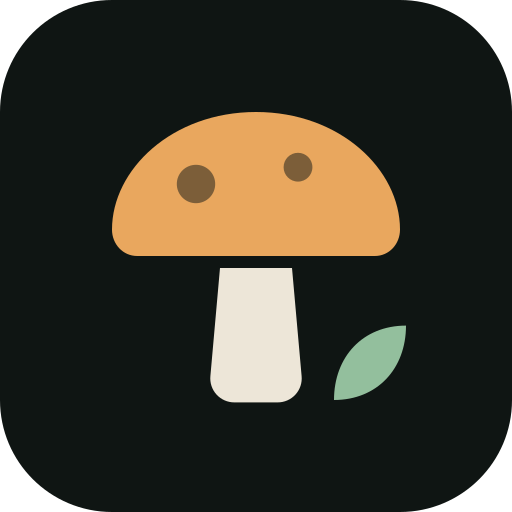

Shroom Log for Android
The full app, working offline, with hike tracking that keeps going when the phone is locked.
Download the app (APK)Installing it
- Open this page on your Android phone and tap Download the app.
- When the download finishes, tap the notification or open shroom-log.apk from your Downloads.
- If Android says your browser can't install apps, tap Settings, turn on Allow from this source, then go back.
- Tap Install. If Play Protect warns that it doesn't know the app, tap More details then Install anyway. That's normal for apps that aren't in the Play Store.
- Open it and allow location (and notifications, so you can see when a hike is recording).
Updates
The app checks for a new build once a day when it has signal, and you can check any time under More › App updates. Tap Download, then install it the same way. It replaces the old version and keeps all your finds.
Moving your finds from the web version
The web app and the Android app keep separate logs. In the web version, use More › Backup to save a backup file, copy it to your phone, then restore it under More › Backup in the Android app.
Safety: never eat a wild mushroom or plant based on this app or any other. Have it checked in person by an expert.